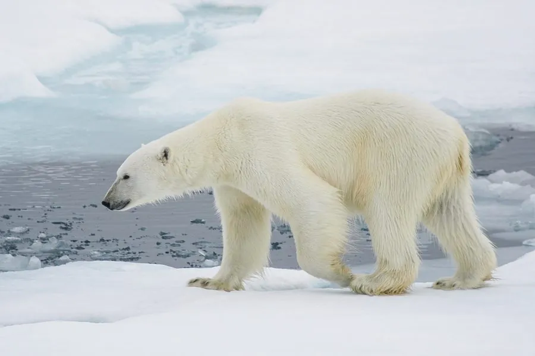

哺乳动物 · 动物界
北极熊 Ursus maritimus

北极海冰上的顶级捕食者，皮肤是黑色的而毛发中空透明，几乎只捕食海豹，海冰缩减是其最大威胁。
- 分类
- 门脊索动物门纲哺乳纲目食肉目科熊科属熊属
- 栖息环境
- 北极海冰覆盖的近岸浅海与浮冰区，随冰缘移动
- 地理分布
- 北极圈周边的加拿大、格陵兰、俄罗斯、美国阿拉斯加和挪威斯瓦尔巴
- 保护级别
- IUCN 易危（VU）
物种志
北极熊体长 1.8–2.5 米（雄性可近 3 米），肩高 1.2–1.6 米，雄性体重 350–700 kg，雌性约 150–300 kg。它的毛发看似白色，实际上中空而透明，皮肤是黑色的，有助于吸收阳光热量；脚掌宽大并长有毛，可在冰面上防滑。
北极熊分布在北极海冰覆盖的环极地区，活动范围可达数十万平方千米，主要捕食环斑海豹，常在冰面呼吸孔旁守候，用前掌猛击将海豹拖上冰面。它能在海水中连续游泳数十公里，嗅觉可在数公里外察觉海豹的气息。北极熊并不冬眠，只有怀孕的雌熊会在雪洞中越冬并产仔，妊娠期约 8 个月，每胎 1–3 仔。海冰减少缩短了捕猎时间与平台，使部分种群数量下降，长期生存面临威胁。
形态与习性
- 食性以环斑海豹为主，偶食海象尸体、鱼类和鸟蛋
- 体长1.8–2.5 m，肩高 1.2–1.6 m
- 体重雄性 350–700 kg，雌性约 150–300 kg
- 寿命野外约 20–25 年
- 繁殖妊娠期约 8 个月，每胎 1–3 仔
- 游泳能力可连续游泳数十公里
- 嗅觉能在数公里外察觉海豹的气息
趣味知识
- 北极熊的毛发是中空透明的，皮肤其实是黑色的。
- 它们常守在冰面呼吸孔旁，用前掌把海豹拖上冰面。
- 北极熊能连续游泳数十公里，前掌像宽大的船桨。
- 只有怀孕的雌熊会在雪洞中越冬并产仔，其余个体不冬眠。
生态关系
- 捕食 → 环斑海豹 北极熊依赖海豹脂肪